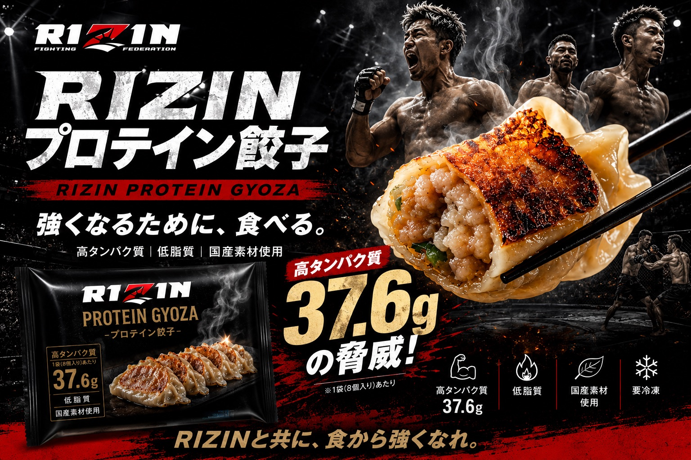
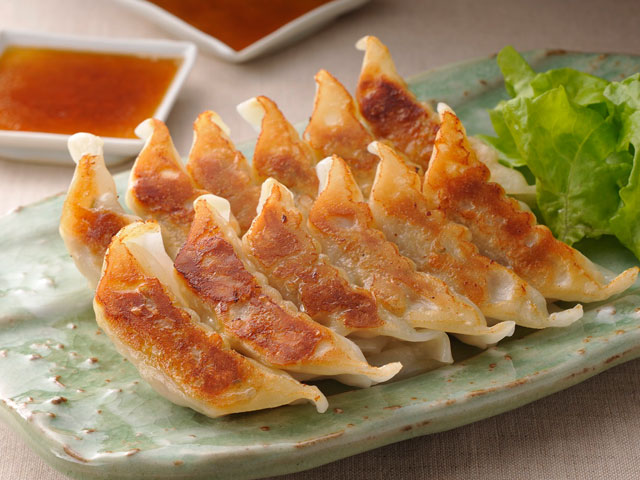
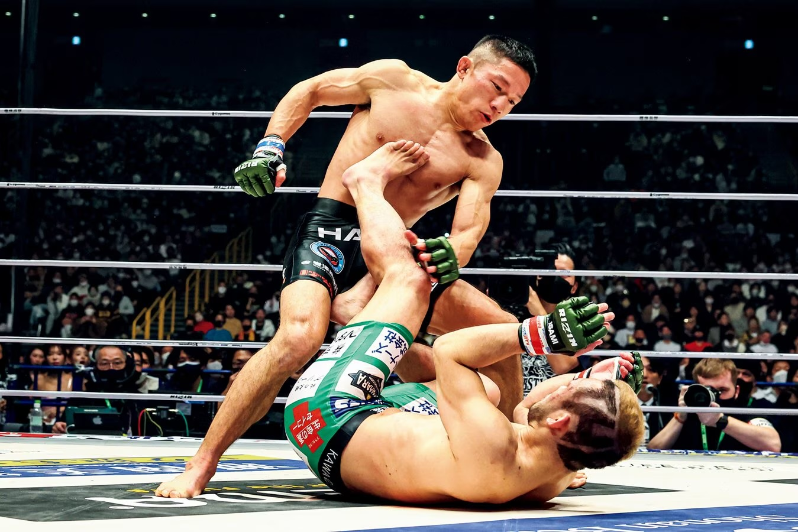
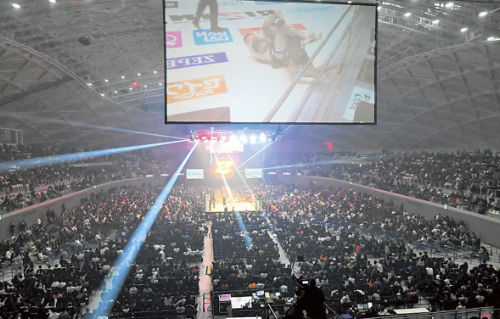
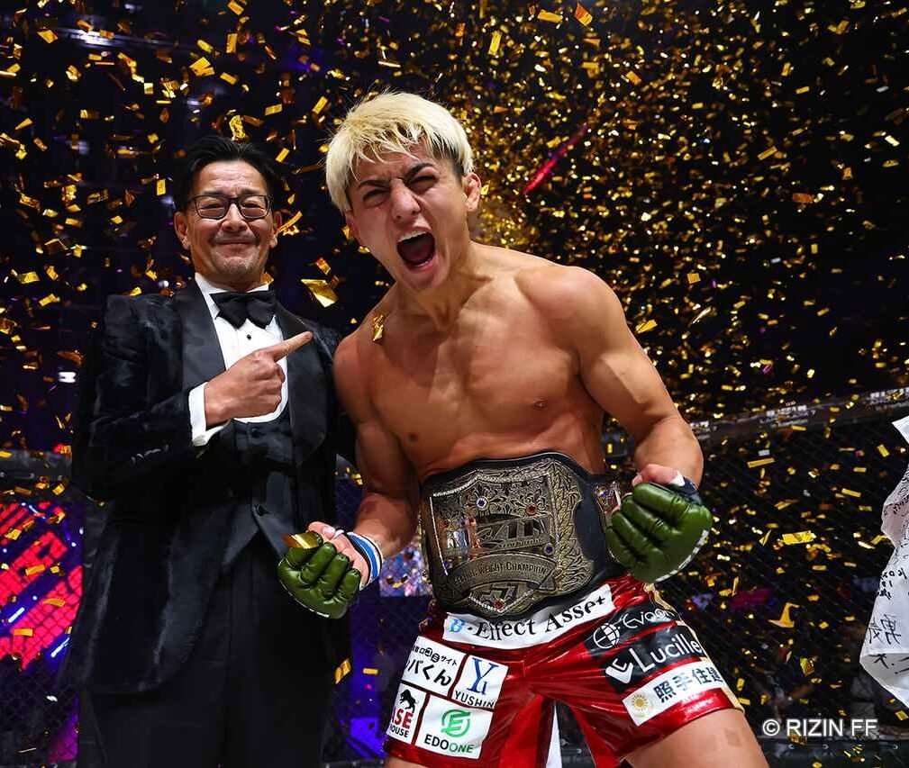
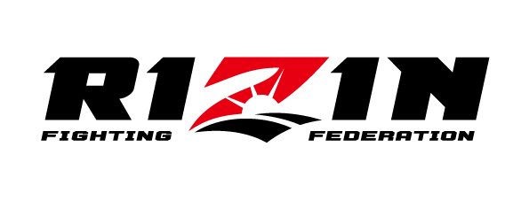
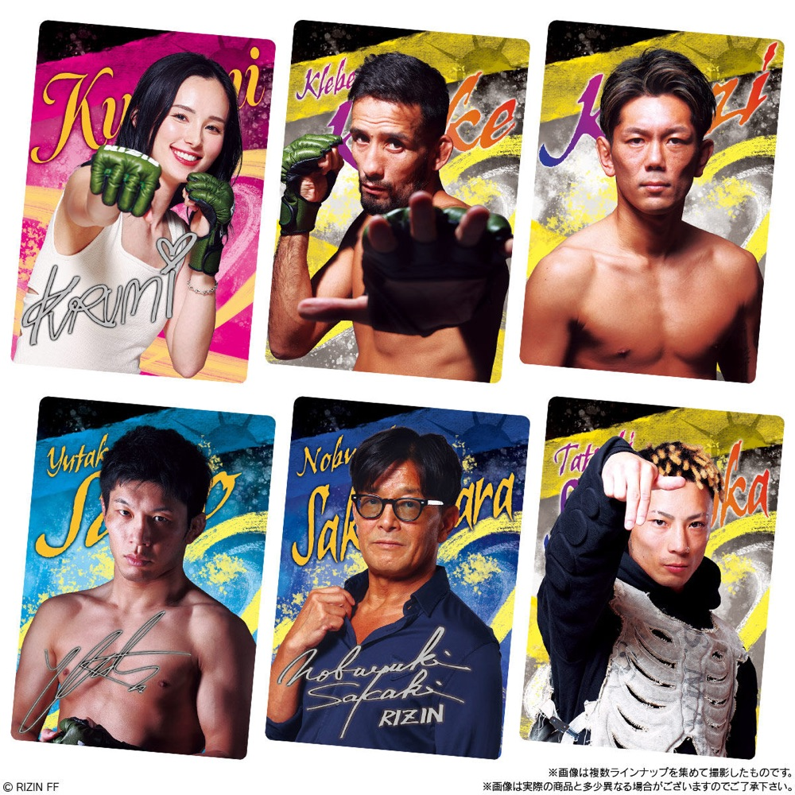

戦略的コラボレーション提案
RIZIN × プロテイン餃子 — 戦略的コラボレーション提案

格闘家も食べる、本物のプロテイン餃子。“栄養 × 美味しさ”で新たな市場を切り拓く。
市場機会 Market Opportunity Analysis
国内タンパク補給食品市場（2025年予測）
3,096億円
前年比 +4.4%
ヘビーユーザーが需要の約50%を占める一方、健康維持目的のファミリー・シニア層へ拡大中。
冷凍餃子市場トレンド
136億円
※大阪王将「羽根つき餃子」単一商品売上
絶対王者だった味の素を大阪王将がシェアで逆転。変わり種・利便性ニーズで市場構造が変化。
ホワイトスペース
「日常食としての美味しさ」と「アスリート級の栄養価」を両立した商品は未だ不在。ここにRIZINブランドが参入する勝機がある。
タンパク補給食品市場の拡大推移（億円）
出典: 富士経済「タンパク補給食品の国内市場を調査」2025年予測
プロテイン餃子の課題について Current Market Challenges
課題 01
パサパサしていて不味い
既存品はタンパク質量を優先するあまりパサパサ。餃子本来のジューシーさが失われている。
課題 02
「サプリメント」扱い
“食事”ではなく“栄養摂取作業”。日常食としての市民権を、まだ得られていない。
CORE PROBLEM
「栄養機能」と「美味しさ」の分断
市場にはストイックな機能性商品か、美味しいだけの一般商品しかない。
「プロ格闘家が認めるスペック」×「誰でも美味しい味」が空白。
RIZINプロテイン餃子の強み Why This Product Wins

この餃子のスペック（1個あたり）
4.7g
たんぱく質
0.8g
脂質
46kcal
エネルギー
→ 8個入りで たんぱく質37.6g（1食でサラダチキン約2個分相当）
競合比較表（1個あたり）
| 本商品 | 味の素 SOLIMO PROTEIN |
マッスル ギョーザ |
|
|---|---|---|---|
| たんぱく質 | 4.7g最多 | 4.2〜4.4g | 2.2g |
| 脂質 | 0.8g最少 | 約1.4g | （低・非公開） |
| 流通 | 会場 / EC / ジム / 小売最広 | Amazon限定 | EC中心 |
3つの技術的裏付け
皮までタンパク質
あんだけでなく、皮にも乳たんぱく質を練り込み。味を犠牲にせず数値を確保。
パサつきゼロの保水設計
トレハロース・ソルビトールで保水。「健康食品はパサつく」という常識への解答。
多様なタンパク源
鶏肉・乳たんぱく・大豆たんぱくを複合配合。コラーゲンペプチドは美容・コンディショニングの+α。
注記: 「たんぱく質」の主役は鶏・乳・大豆。コラーゲンは“美容・関節の+α”として別枠で位置づけ。
商品コンセプト Our Solution Concept
コンセプト（仮）
「格闘家も普段食べる」
本物のプロテイン餃子
サプリのような“特別なもの”ではなく、毎日の食卓に並ぶ“美味しい食事”として。
柱 01
高タンパク・栄養士監修
タンパク質を確保しつつ、脂質・糖質を最適化／ビタミンB群を強化。
柱 02
餃子として本当に美味しい
独自製法でパサつきゼロ／ニンニクの有無を選べる設計。
柱 03
プロが選ぶ信頼のクオリティ
国内認定工場で製造。徹底した品質管理のもとで仕上げる。
なぜRIZINか Why RIZIN
味の素にない、RIZINだけが持つ資産



会場
年15大会の熱狂の中での実食体験。
選手
減量期に実際に食べる＝最強の説得材料。
推し活・ファンコミュニティ
試合日以外の日常接点。
物語
Amazon限定の機能性商品には作れないブランドストーリー。

RIZINブランドと共に、食から強くなる。
ターゲット ＆ 商品展開 Target & Product Line
「ファン需要」と「ガチのプロテイン需要」、2つの軸で最適にアプローチする
同じプロテイン餃子を、応援・推し活の対象としても、日常の高タンパク食としても展開。ファン層と実需層、それぞれに刺さる商品ラインとプロモーションで、両方の市場を取りにいく。
軸 01 ｜ ファン需要
8個入り 980円（税込）
ターゲットRIZINファン
選手のオリジナルカードをランダム封入。
推し活・コレクション需要を刺激し、「応援消費」としてのリピートを生む。
軸 02 ｜ ガチのプロテイン需要
お徳用・大容量 約50個
ターゲットトレーニー・格闘家
カードなし。日常の高タンパク食として。
味とコスパで選ばれ、毎日の食事に組み込まれる「実需」を獲得する。

実証事例 ｜ RIZINウエハース
「選手カード付き」のファン需要は、すでに実証済み。
RIZIN選手のカードを封入したウエハースは大ヒット。「推し選手を集める」というコレクション需要が、商品の購買を強力に後押しすることを証明しました。
この実績をプロテイン餃子（8個入り・カード付き）に応用。“食べて応援する”という新しい購買体験を生み出します。
2軸戦略
「応援・推し活」と「日常の栄養」——需要の異なる2軸を、商品ラインとプロモーションで明確に出し分ける。ファン層と実需層の双方を同時に取り込み、市場を最大化する。
ビジネスモデル Business Model
事業へのコミット度合いに応じて、2つの座組をご提案します
共同保有型（50:50）
両社が当事者として、同じ熱量で一緒につくる。
RIZIN餃子事業を共同保有。全事業経費を控除した純利益を 50:50 で分配（各社人件費は各社負担）。
bf2 の役割
商品企画・製造／EC・会場販売／マーケ・広告／CS／物流・在庫／システム／売上管理
RIZIN の役割
IP提供／選手起用／大会会場販売／会場PV露出／公式SNS発信／PR協力
IPライセンス型（ロイヤリティ）
IPとプロモ支援に専念、運営はbf2が全巻き取り。
RIZINはIP提供＋プロモーション支援に専念。企画・製造・EC・物流・CS・販売などの実務はbf2が全て担う。RIZINへは売上の約10%をIPロイヤリティとして支払う。
bf2 の役割
上記以外のすべて（企画・製造・EC・物流・CS・販売・運営）を巻き取り
RIZIN の役割
IP提供／プロモーション支援（会場CM・チラシ・キッチンカー 等）
いずれも対象はRIZIN餃子事業のみ。コミットの深さ（＝リターンの大きさ）に応じてお選びいただけます。
販売計画・チャネル 仮・概算 Sales Plan (Tentative)
※ 以下の数値はすべて仮・概算です。商品単価・販売目標・経費は、試作・市場テストを経て確定します。
EC部門
- 商品8個入り 980円（税込）※大容量(約50個)も展開予定
- 販売目標月5,000袋／年60,000袋
- 売上53,460,000円
経費
- 製造原価24,000,000
- 配送・梱包6,000,000
- 広告費10,000,000
- 決済手数料1,600,000
- ECシステム1,200,000
- 撮影制作1,000,000
EC利益 約9,600,000円
会場部門
- 商品会場限定 4個入り 700円（税込）
- 大会規模小規模10,000人×年10大会／大規模20,000人×年5大会
- 販売目標小規模1,500×10＝15,000／大規模3,000×5＝15,000／年間30,000パック
- 売上19,080,000円
導線
会場PV放映・選手紹介・選手試食・選手販売参加・試食実施・限定パッケージ
経費
- 製造原価4,500,000
- 販売人員2,000,000
- 販促費1,000,000
- 会場運営費1,000,000
会場利益 約10,500,000円
プロモーション戦略 Promotion
選手PR / アフィリエイト
トップ選手＝固定フィー＋露出、中堅・若手＝成果報酬アフィ（初回厚め・継続薄めのティア設計）。核は「減量期に実際に食べる」リアル投稿。投稿は二次利用許諾を取り広告素材へ転用。
ジム送客（B2B2C）
RIZIN関連ジムの会員が10%offで購入＋ジム側にもインセン還元。冷凍ストッカー設置で店頭販売チャネル化。
ギフティング → UGC
格闘家・トレーニーへ大量ギフティング（原価のみ＝実質クリエイティブ制作費）。Carry Onのインフルエンサー網で面展開、ハッシュタグ統一・二次利用許諾。
横断計測
選手・ジム・インフルエンサーの全施策に固有コード/URLを発行し、流入経路を一元計測。
初年度シミュレーション First-Year Simulation（標準ケース）
総売上
72,540,000円
約7,250万円
総利益
20,100,000円
約2,000万円
利益配分
RIZIN
10,050,000円
bf2
10,050,000円
中長期目標 Mid-to-Long Term
年間1億円は、余裕で狙えるプロダクトです。
標準ケース
- 年間売上1億〜1.2億円
- 年間利益3,000万〜4,000万円
成長ケース
EC月10,000袋・会場年50,000パック
- 年間売上1.5億〜2億円
- 年間利益5,000万円超
将来展開 Vision: RIZIN FOODS
本日のご依頼事項 Today's Decisions
本日のご依頼事項 （3つの意思決定）
- 協業の基本合意（RIZIN餃子事業の50/50共同保有・利益折半の方向性）
- 選手起用の公式スキーム合意（団体経由でのPR・アフィ可否、起用選手の選定協力）
- 直近大会でのパイロット枠の確保（会場実食＋物販テスト）